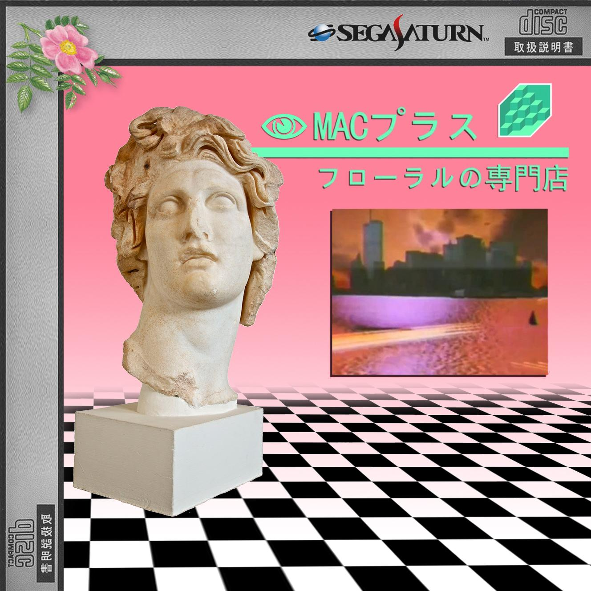
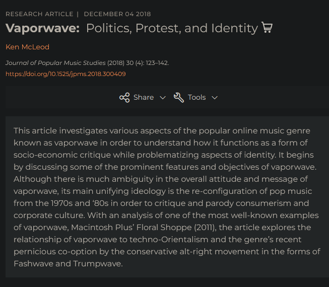
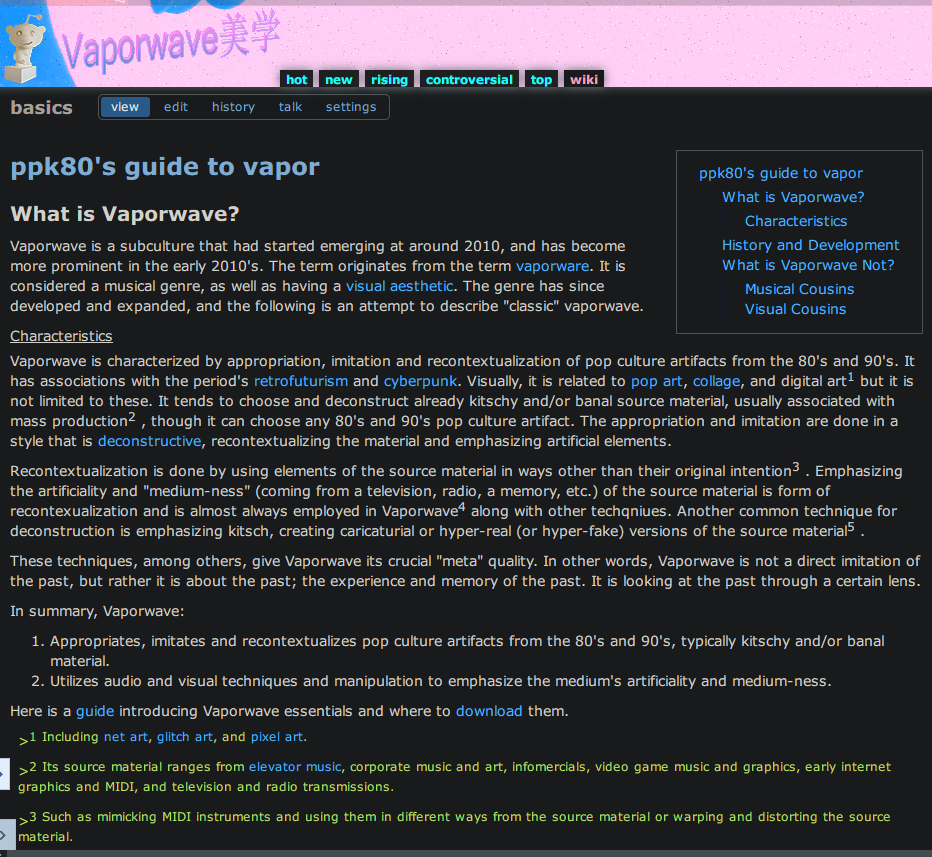
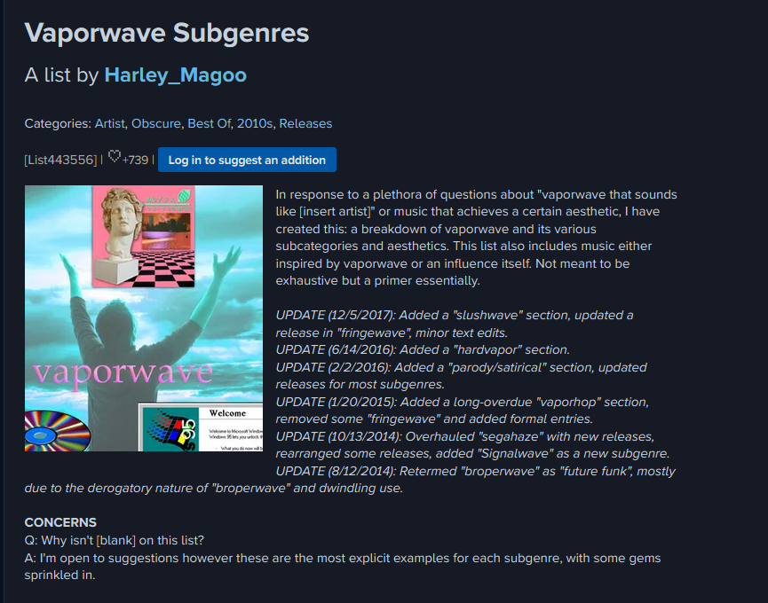
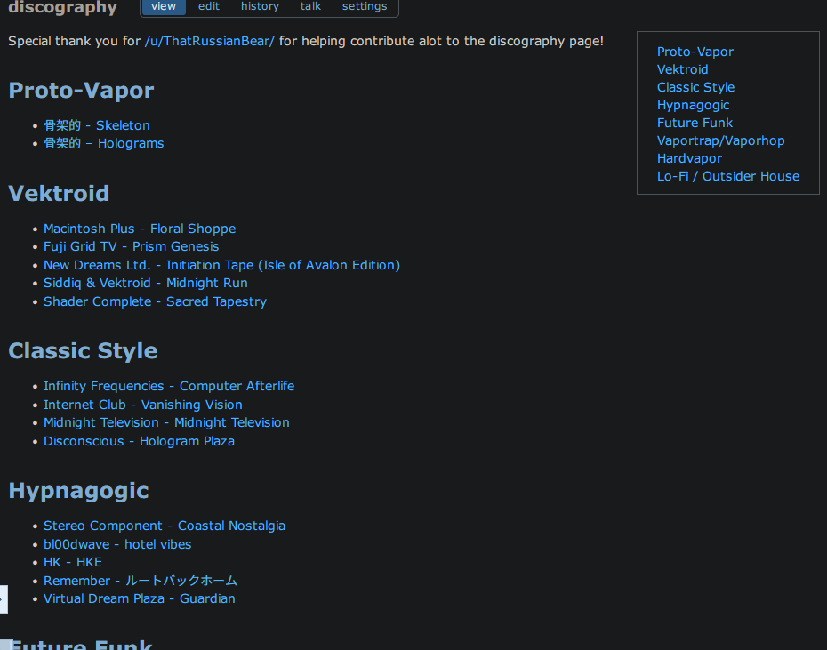
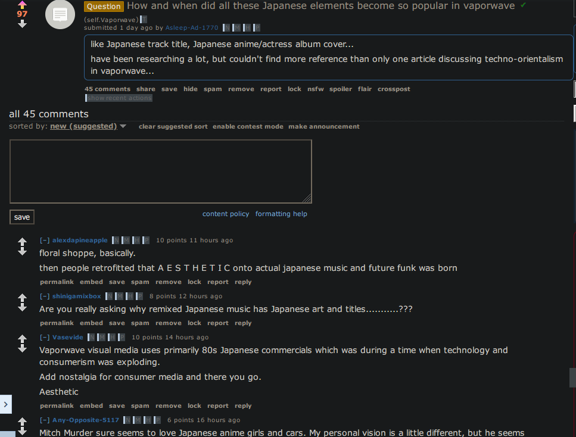
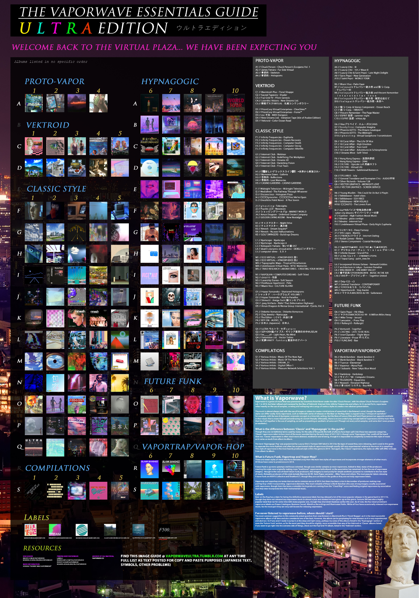

Vaporwave, Knowledge Production, and Little Art Histories
Vaporwave is difficult to research because it is not only a genre, and not only a visual style. It is also an internet community that has produced many of its own explanations, canons, timelines, lists, arguments, and archives. That makes it useful for thinking about how art historical knowledge is produced online. 4, 5

I am using Vaporwave here as a case of distributed art history. The important thing is not only that people made music and images. It is that people also made guides to the music and images. They explained it while it was happening.
Starting Point
Art history has inherited a strong idea of single-author knowledge. A scholar studies an object, interprets it, and writes an account. That account may cite other people, but the final form is still usually attached to one authorial position.1
The distinction between personal knowledge and social knowledge is useful here. It questions whether the individual author should be treated as the main seat of knowledge. In a social model, knowledge is not only produced by one expert. It is produced through communities, institutions, reception, and collaboration.2
I agree with that general movement. I do not think the individual author disappears, and I do not think the single-author model is always wrong. Some kinds of thought still depend on one person working through a problem. But it is not enough for internet genres. Vaporwave makes this visible because the community is not only receiving the work. It is also sorting it.
The middle term in the diagram below borrows loosely from the language of Big Science, where knowledge production becomes visibly institutional, collective, expensive, and distributed across many roles.3 It is not a direct transfer. It is only a useful comparison.
Personal knowledge
A single writer or scholar produces an account. The authority sits mainly in the author, their method, and their relation to the material.
Big art history
Many people contribute to interpretation. The project can include artists, publics, staff, institutions, and researchers.
Self-researching community
The community produces its own accounts. Guides, playlists, threads, lists, essays, and documentaries become part of how the genre is known.
What Vaporwave Is, Provisionally
Vaporwave can be described as music, image, meme, genre, style, subculture, and internet phenomenon. These descriptions are all partly true. None of them is enough by itself.
A basic description would say that Vaporwave emerged around 2010 and works through appropriation, imitation, and recontextualization of older commercial media. It often draws on 1980s and 1990s pop culture, corporate design, elevator music, television, early internet graphics, Japanese consumer technology, mall aesthetics, and obsolete media formats. 6, 7, 8
That description is already unstable. It describes a center, not a border. A community can call something Vaporwave for a while and later decide it is something else. A subgenre can be named, renamed, mocked, abandoned, revived, or absorbed into another term. There is no central institution that approves the category.9
External Research
Vaporwave has been researched and explained by journalists, academics, and other writers outside or partly outside the community. This work matters. It gives the genre public legibility, connects it to larger histories, and makes it available to readers who would not find the community materials on their own.10, 8
The limitation is also clear. External research often has to stabilize the object before it can analyze it. It needs to say what Vaporwave is, where it began, what it means, and why it matters. This can produce useful accounts. It can also make the genre look more coherent than it was.



I do not want to say external research is wrong because it is external. That would be too simple. An outside account can see patterns that insiders miss. It can also provide historical and theoretical context that a community guide does not need to provide.
The problem is not exteriority by itself. The problem is treating exteriority as the only serious place where knowledge can be produced.
Internal Research
Vaporwave communities also produce knowledge internally. This happens through guides, manifestos, Reddit threads, Discord discussions, YouTube essays, playlists, Discogs lists, Rate Your Music lists, image guides, blog posts, documentaries, and comment sections.11, 12, 13
These materials are uneven. Some are careful. Some are casual. Some are wrong. Some are arguments disguised as lists. Some are personal taste with historical consequences. But this unevenness does not make them irrelevant. It is part of what they are.



A playlist is not an essay, but it can make an argument. A guide is not a peer-reviewed article, but it can set a canon. A wiki page is not neutral, but neither is an article. A comment thread is not stable, but it may preserve a question that formal writing did not think to ask.
Internal research is not automatically better because it comes from inside the community. It has its own biases. It has favorites, omissions, jokes, dead links, factional claims, and habits of repetition. The point is only that it is already producing knowledge.
Little Art Histories
I am calling these materials little art histories. I do not mean that they are minor because they are unimportant. I mean that they are local, partial, situated, and often made for use rather than for disciplinary recognition.
A little art history may be a list of essential albums, a chart of subgenres, a forum answer, a documentary, a fan-made archive, or a playlist arranged in a certain order. It may not present itself as art history. It may still do art historical work.
These histories do not only describe Vaporwave after the fact. They help make Vaporwave available as a genre. They teach people what counts, what came first, which works are central, which names are embarrassing, which subgenres matter, and which sounds have already become overfamiliar.
This is why the community is not just an audience. The community is also a critical apparatus. It listens, names, remembers, forgets, jokes, disputes, archives, and canonizes. These are ordinary actions online. They are also actions through which an art history can form.
Researching It
The research problem is practical before it is theoretical. Vaporwave is difficult to define. Anybody can call something Vaporwave. Approval is often communal, temporary, and informal. There are also many communities, and they do not always share the same standards.
The internet also does not preserve itself. Some histories exist inside small groups, old comments, removed videos, private servers, changed usernames, dead links, broken image hosts, and platform layouts that no longer exist. The archive is not only incomplete. It is structurally unstable. 5, 14
- Guides define terms and give newcomers a route through the genre
- Playlists turn listening into sequence, comparison, and canon
- Threads record arguments, corrections, jokes, and changing consensus
- Lists stabilize names, subgenres, and exemplary works
- Archives preserve files and context, but always incompletely
A reasonable method would have to combine sources. It would use academic writing, journalism, community documents, playlists, comment threads, old screenshots, platform histories, and interviews where possible. It would not treat all of these as the same kind of evidence. It would ask what each kind of source can know.
The earlier version of this presentation ended by placing the problem under artistic research. That frame may still be relevant, but it is not the central problem here. The central problem is more direct: a community is producing knowledge about its own aesthetic life, and art history has to decide how to read that knowledge without simply absorbing it.
Conclusion
Little art histories is not a finished method. It is a way to keep the scale of the problem visible. Vaporwave has large historical connections, but many of its histories are small, partial, and user-made. They are not outside the genre. They are one of the ways the genre has continued to exist.
This also means that fandom and knowledge production cannot always be separated cleanly. A playlist, a guide, or a thread can be enthusiastic, biased, casual, and still historically useful. The problem is how to read those materials without making them seem more stable than they are.
A community source should not be treated as raw data waiting for an external expert to interpret it. It already has a position. It has taste, timing, platform context, omissions, and a sense of audience. The task is to read it as a situated account, not as a transparent record.
The point is not to romanticize the community. The point is to notice the work it is already doing. If art history wants to study internet genres, it has to study not only the artworks and artists, but also the ordinary systems through which those works were named, remembered, argued over, and made legible.
References
- Polanyi, Michael. Personal Knowledge: Towards a Post-Critical Philosophy. Chicago: University of Chicago Press, 1958. back to text
- Longino, Helen E. Science as Social Knowledge: Values and Objectivity in Scientific Inquiry. Princeton: Princeton University Press, 1990. https://press.princeton.edu/books/paperback/9780691020518/science-as-social-knowledge. back to text
- Galison, Peter, and Bruce Hevly, eds. Big Science: The Growth of Large-Scale Research. Stanford: Stanford University Press, 1992. back to text
- Born, Georgina, and Christopher Haworth. "Mixing It: Digital Ethnography and Online Research Methods - A Tale of Two Global Digital Music Genres." In The Routledge Companion to Digital Ethnography, edited by Larissa Hjorth, Heather Horst, Anne Galloway, and Genevieve Bell, 77-88. New York: Routledge, 2017. back to text
- Hine, Christine. Ethnography for the Internet: Embedded, Embodied and Everyday. London: Bloomsbury Academic, 2015. https://www.bloomsbury.com/us/ethnography-for-the-internet-9780857855701/. back to text
- Harper, Adam. "Comment: Vaporwave and the Pop-Art of the Virtual Plaza." Dummy, December 7, 2012. http://www.dummymag.com/features/adam-harper-vaporwave. back to text
- Trainer, Adam. "From Hypnagogia to Distroid: Postironic Musical Renderings of Personal Memory." In The Oxford Handbook of Music and Virtuality, edited by Sheila Whiteley and Shara Rambarran, 409-427. Oxford: Oxford University Press, 2016. https://doi.org/10.1093/oxfordhb/9780199321285.013.24. back to text
- Tanner, Grafton. Babbling Corpse: Vaporwave and the Commodification of Ghosts. Winchester: Zero Books, 2016. back to text
- Chandler, Simon. "Genre As Method: The Vaporwave Family Tree, From Eccojams to Hardvapour." Bandcamp Daily, November 21, 2016. https://daily.bandcamp.com/lists/vaporwave-genres-list. back to text
- McLeod, Ken. "Vaporwave: Politics, Protest, and Identity." Journal of Popular Music Studies 30, no. 4 (2018): 123-142. https://doi.org/10.1525/jpms.2018.300409. back to text
- ppk80. "ppk80's Guide to Vapor." Vaporwave Aesthetics Wiki, n.d. Community guide reproduced as a screenshot in the author's 2024 presentation. back to text
- Harley_Magoo. "Vaporwave Subgenres." Rate Your Music, n.d. https://rateyourmusic.com/list/Harley_Magoo/vaporwave-subgenres/. back to text
- The Vaporwave Essentials Guide: Ultra Edition. Vaporwave Ultra, n.d. https://vaporwaveultra.tumblr.com/. back to text
- Rogers, Richard. Digital Methods. Cambridge, MA: MIT Press, 2013. https://mitpress.mit.edu/9780262528249/digital-methods/. back to text